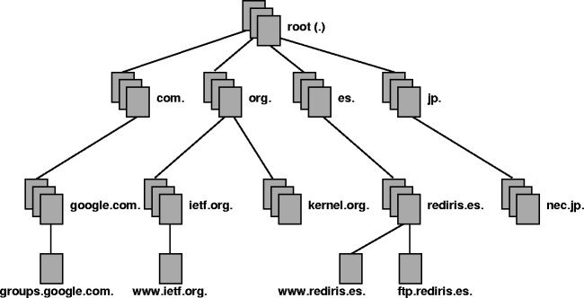

{% extends "base.html" %}
{% block content %}
{% if session['logged_in'] %}
DNS
Tecnología basada en una base de datos que sirve para resolver nombres en las redes, es decir,
para conocer la dirección IP de la máquina donde está alojado el dominio al que queremos acceder.
está compuesto por tres partes con funciones bien diferenciadas: Cliente DNS, Servidor DNS y Zonas de seguridad.
La resolución de nombres utiliza una estructura en árbol, mediante la cual los diferentes servidores DNS
de las zonas de autoridad se encargan de resolver las direcciones de su zona, y sino se lo solicitan a
otro servidor que creen que conoce la dirección.

{% else %}
Sin autenticar!
{% endif %}
{% endblock %}